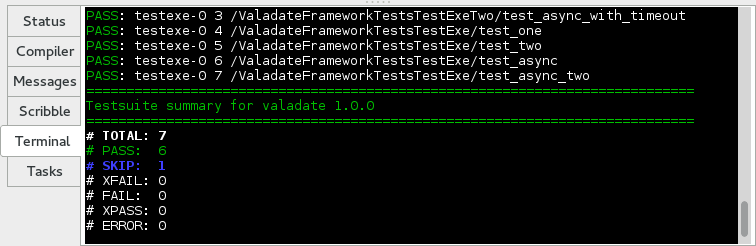

Hacia un framework de desarrollo guiado por pruebas para Vala - quinta parte - Producto Viable Mínimo
Posted on Sat 20 February 2016 in Vala
Las cosas se han ido a toda maquina desde mi ultimo post, con la rama de desarrollo concretizandose paso por paso. Cuando me senté a examinar la lista de los requisitos, decidí que el mejor punto de partida para iniciar la primera versión sería, por lo menos, replicar el mismo conjunto de características del original. En resumen, esos eran:
- Descubrimiento de pruebas como el JUnit o el .NET framework de pruebas
- Ejecutar pruebas para todos los parámetros de un conjunto especifico
- Funciones de utilidad para esperar en el circuito main hasta que un evento específico o timeout ocurre
- Apoyo para Pruebas asincrónicas. Un método declarado async en Vala sera ejecutado en el circuito main hasta se acaba o después de un timeout configurable.
- Funciones de utilidad que aportan directorios temporales a las pruebas.
Estos se han traducido en temas de GitHub y la placa de Waffle además de algunas características que pienso deberían ser incluidos en el primer corte, es decir:
Todas esas características se han sido añadido al hito de la versión 1.0.0 y pues bien, me da mucho placer de decir que después de un poco menos de dos semanas de esfuerzo concertado, he (re) aplicado casi todas las características anteriores! Tomando en cuenta en el nivel de esfuerzo gastado hasta ya, tengo previsto el lanzamiento inicial tan pronto como el 1 de marzo.
De veras, me entusiasma mucho lo que ha salido del proceso hasta ya. Uno de los picores originales que intentaba rascar al inicio fue el nivel de detalle de las pruebas unitarias en Vala y ya a través del vudú de XML/XSLT/JSON y GModule creo que lo he logrado. Pues bien, aunque los detalles de la implementación sean francamente un poco espantosos, la API que enfrenta al usuario los esconde bastante bien.
Con una script de construcción configurada correctamente, el uso de Valadate es tan fácil como declarar una subclase de TestCase y añadir unos métodos de instancia anotada así:
Y ya esta. No se requiere una función main, no hay que agregar las pruebas el en constructor de la TestCase. Limpio y sencillo, así como debería ser. El fragmento de código arriba es una prueba real en directo del framework Valadate (la prueba real de la prueba, digamos...) y funciona muy bien, produciendo la salida de TAP tanto en un archivo al terminal -

Los lectores astutos se dará cuenta de que todavía es GLib.Test lo que manda debajo el capó, aunque esta encapsulado suficientemente para permitir su sustitución gradual sin afectar como los usuarios escriben sus pruebas. Ahora debería ser posible añadir características como eventos y notificaciones sin romper el código del usuario.
La clase TestRunner maneja el descubrimiento de pruebas a través de un archivo de Gir creado cuando se compila la prueba. Este fue un concepto clave de la versión original de Valadate, pero me tomó un paso más allá, combinándolo con GModule para crear una especie de módulo de introspección "de los pobres". El binario de prueba necesita ser compilado como un ejecutable independiente de posición (PIE) para que esto funcione, lo que está actualmente solamente soportado en Linux y Mac OS X, aunque los fundamentos deben aplicarse a las DLL ejecutables en Windows también.
La TestRunner actualmente soporta [Test], [AsyncTest] y [SkipTest] con parámetros. Aunque sea trivial añadir nuevas anotaciones, voy a mantenerlos al mínimo y usar un modelo basado en complementos que les permitirá decorar y controlan cómo se ejecutan los métodos de prueba.
Por supuesto, si todo eso te parece demasiado raro, todavía puedes hacer las cosas en la manera antigua mediante la adición de cada método de prueba en el constructor de la TestCase:
y el proporcionamiento de tu propio punto de entrada main así:
en este caso, no se necesita compilar como binario PIE o añadir las anotaciones de los métodos (no van a funcionar, de todas formas). Aun puedes usar las otras características impresionantes como las pruebas asincrónicas, aunque vas a tener más código redundante para gestionar.
Con esta característica ya implementada y en el camino de ser probado sólidamente, me parece que es la hora de fusionar la rama de desarrollo y rollar un lanzamiento. Así que puedo empezar a recibir las reacciones (y los informes de error) a lo que hay antes de la aplicación de las características más sustanciosos como la integración de Gherkin y una interfaz gráfica de usuario.
No hace falta decir que los usuarios no serán capaces de utilizar Valadate bien si no hay documentación clara y ejemplos funcionales, entonces he armado varios proyectos de ejemplo y un wiki. También he añadido soporte para la construcción de los documentos de Valadoc y GtkDoc en el árbol de código fuente del proyecto. Todavía se queda un poquito de trabajo antes de la primera versión, pero la infraestructura ya esta montado (y puedo cerrar issue # 1!).
Pues nada, voy a terminar este post aca, pa que pueda volver a documentar el trabajo hecho hasta ahora y preparar el lanzamiento para su despliegue. La siguiente entrada sobre Valadate seria sobre el lanzamiento, así que ahora es un buen momento para decir lo que piensas, en los comentarios o en los lugares "habituales". Gracias por tu atención!